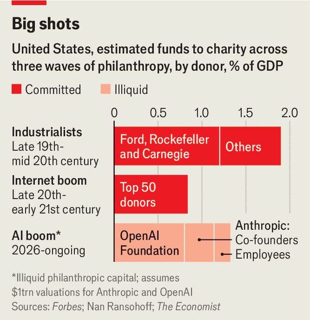

Silicon Valley’s AI boom is remaking American charity
AI founders pledge to give away hundreds of billions of dollars. How will they be spent?
Aug 13th 2026
EACH DOLLAR given to charity may soon do less good. In the coming years the marginal cost of saving a child’s life from disease or starvation could jump from about $5,000 to $15,000, or more. This sounds worrying. In fact it is good news, argues Alexander Berger of Coefficient Giving, one of Silicon Valley’s most influential grantmakers. Non-profits like his spend on cheap, scalable interventions first—say, by buying malaria nets before malaria vaccines. If an influx of donations pays for all the inexpensive ways of doing good, then the rest flows into costlier acts of altruism that can save yet more lives.
Just such a deluge of cash may be coming. Non-profits are preparing for the largest one-time surge in philanthropic giving in history. The boom in AI is making a lot of tech types in Silicon Valley very rich. The initial public offerings (IPOs) of shares in Anthropic and OpenAI, which could happen as early as this year, could value the AI labs at more than $1trn apiece—enriching their founders, employees and investors. Many are thinking about how to give their cash away; cumulatively they have already promised to donate an estimated $430bn, roughly equivalent to two Marshall Plans in today’s money.
The industrial age produced Carnegie, Rockefeller and Ford, whose fortunes endowed universities and built concert halls. The internet age created the Giving Pledge: Bill and Melinda Gates, Mark Zuckerberg and their ilk supported farming, schooling and health care for the world’s poorest. Nan Ransohoff, who works on public goods at Stripe, a payments company, predicts that AI may now create a third, much larger wave of giving. The ambition that led many of today’s newly minted rich to build world-altering businesses now leads them, like their predecessors, to want to cure the world’s ills.
Yet AI philanthropists will be different in important ways. They combine extraordinary wealth with unusual urgency and, in some cases, exotic moral views. Nick Allardice of GiveDirectly, a charity that gives cash to the world’s poorest people, says it is gearing up to receive many millions of dollars in new funding. “This could be a moment where hundreds of millions of lives can be improved, and there may not be many moments like that in history.”

Indeed, the scale of promised AI giving far outstrips that of previous philanthropic waves. In January all seven co-founders of Anthropic, including Dario Amodei, the firm’s boss, pledged to give away 80% of their wealth. Estimates from Forbes suggest that their combined giving may amount to $110bn. Anthropic’s employees could soon have some $60bn committed in “donor-advised funds” (DAFs), says Ms Ransohoff. Anthropic matches employees’ charitable contributions to these funds. The OpenAI Foundation, which holds 26% of its namesake’s stock, may have some $260bn to give. OpenAI employees will presumably also become donors.
In all, the IPOs of Anthropic and OpenAI may unlock some $430bn for charity. That is an endowment worth about 25 Ford Foundations. Then there are smaller AI startups, whose founders promise to give away the proceeds of their work. Conservatively, some $20.5bn may be disbursed each year. This compares with the $394bn individual Americans gave in 2025. The value of this wave dwarfs previous ones in all respects bar one. As America is far richer now, this wave’s share of GDP, at about 1.3%, falls short of the industrialists, who probably gave about $35bn in today’s money, or 1.9% of GDP at the time. But it will dwarf the internet wave, when $230bn, or 0.8% of GDP, was dished out from 1990 to 2018 (see chart). It also comes as official aid budgets are falling.
Should we expect an “Amodei Hall” or “Sam Altman Museum”? Today’s would-be AI philanthropists are altogether weirder than their predecessors. Many, though not all, subscribe to a worldview of “Effective Altruism” (EA), a movement of hyper-rationalists who purport to do good by identifying the highest-return, evidence-based uses of donations. Sam Bankman-Fried, who is in prison for defrauding clients of his hedge fund, espoused a popular EA conviction of “earning-to-give”, in which adherents earn a lot and tithe their incomes.
Scientific research and global public health stand to get more cash. In June, Anthropic, the OpenAI Foundation and Stripe led a $500m donation to find a vaccine for cold and flu viruses. Projects may get more ambitious, says Zachary Robinson of the Centre for Effective Altruism, a think-tank in Oxford. EA grants, for example, fund studies to genetically modify mosquitoes, either to crash the population of the bugs or breed resistance in them to the malaria parasite. Some 600,000 people die of malaria each year, so such donations could be cost-effective indeed.
EA’s utilitarian views can also be expansive. David Goldberg of Founder’s Pledge, an organisation that helps tech types give money away, expects a big increase in funding for animal welfare. Donors will probably back projects to stop fast-growing chickens becoming lame under their own weight, and to humanely stun fish at scale. Big grantmakers also give money to projects that aim to improve people’s ability to make predictions about the future and “YIMBY” pro-housing reform in rich Western countries (some dispute that this is philanthropy). Their focus on giving money to projects where they can measure results leads them to overlook causes like women’s empowerment or cultural-heritage protection.
Perhaps the most consequential beliefs among EA donors relate to AI. Some worry about unlikely, high-impact risks, like human extinction. Mr Berger says Coefficient Giving (formerly Open Philanthropy) has funded studies on the “existential risks” posed by rogue AI since 2015. Anthropic and OpenAI, in part influenced by EA views, were founded to build AI safely. Amanda Askell, Anthropic’s in-house philosopher, has long been associated with the movement. Her former husband, Will MacAskill, is EA’s founder and high priest.
As such, a chunk of AI philanthropy will be spent on the chatbots that helped make their mammon. In July Coefficient Giving announced a $160m gift to Resolution, a then one-month-old group focused on “aligning” AI with human values. The OpenAI Foundation, which controls more than half of the estimated $430bn in AI-philanthropy funds and does not identify as an EA body, has a mission to “ensure artificial general intelligence benefits all of humanity”. It will invest handsomely in research on a post-superintelligence future.
This approach carries risks. For one, research into safe AI is hardly measurable. Donors concede that there is no “counter-factual” to human extinction, so it is hard to know whether alignment research, possibly costing billions of dollars, is working or if the same outcome could have been achieved with less money. That would seem to undermine a motivating focus of “effective” giving—namely that it is based on evidence. Other AI-related giving, especially if it is not EA aligned, could come to resemble an effort to buy goodwill for the tech industry, or an attempt to increase the use of its products. This summer the OpenAI Foundation gave $50m to community groups using its technology.
Another challenge is making sure this wave of giving goes to saving lives rather than giving jobs to friends. With so much money coming in, new charities are being created and existing ones are employing more staff and raising pay. Yet non-profits are widely disliked in Silicon Valley. Tyler Cowen, an economist with a large following among tech types, argues that “non-profits are not a well-conceived organisational form” because they often lead to poor incentives and bureaucratic bloat. The most talented types probably take home lofty salaries at AI labs rather than work in non-profits, he notes.
Some rich folk, like Elon Musk believe that problems are better solved by startups. (He also slashed programmes run by USAID, America’s foreign-aid agency.) Grantmakers are looking for “a different kind of non-profit worker”, perhaps with the traits of a tech founder, says Mr Robinson. “Better funding for non-profits means top talent no longer feels like they have to risk financial instability to have an impact,” he says. Coefficient Giving gave its technical AI staff a 30% raise this year in a bid to attract and retain talent.
The final hurdle is making sure the money gets spent, and quickly. The total given will almost entirely depend on the valuations of two companies, Anthropic and OpenAI, which at times have looked wobbly. Then there is the fact that the estimates “take a lot of people at their word in terms of how fast they’ll be aiming to scale or spend”, says Mr Berger. Many in Silicon Valley donate via DAFs, a type of account which allows donors to bank a tax break up front (say, before a big IPO) and decide how to give the money away later. Some $326bn already sits untouched in American DAFs. Mr Goldberg says that such vehicles, when sponsored by corporates, can incentivise the hoarding of charitable cash.
Yet AI philanthropists are brimming with urgency. “In previous waves of philanthropy, you have a lot of people talking a big game, and there’s not always a lot of follow-through,” says Mr Allardice. A repeat seems unlikely, in part because some of the newly rich are “perplexed by the speed at which their own wealth has grown” and might give it away just as quickly, he says. Employees at Anthropic are already selling down some of their equity stakes held in DAFs to get the donations rolling; one explains that he gave money early to help non-profits scale up.
Others are convinced that AI will soon change the world, ending sickness and poverty. Coefficient Giving handed out $1bn in the first half of this year, about as much as it gave in all of 2025. In July it increased a previous commitment to GiveWell, another charity, six-fold to $1bn, partly in the optimistic belief that it needs to act quickly to save lives now, because in the future there may not be lives that need saving. In such a world, says Ms Ransohoff, the aim of charity would shift from ensuring people survive (whether from diseases or a rogue AI) to helping them flourish. That would entail donors asking “squishier questions” about the meaning of life, beauty and aesthetics, she says. Perhaps there will be new concert halls after all. ■